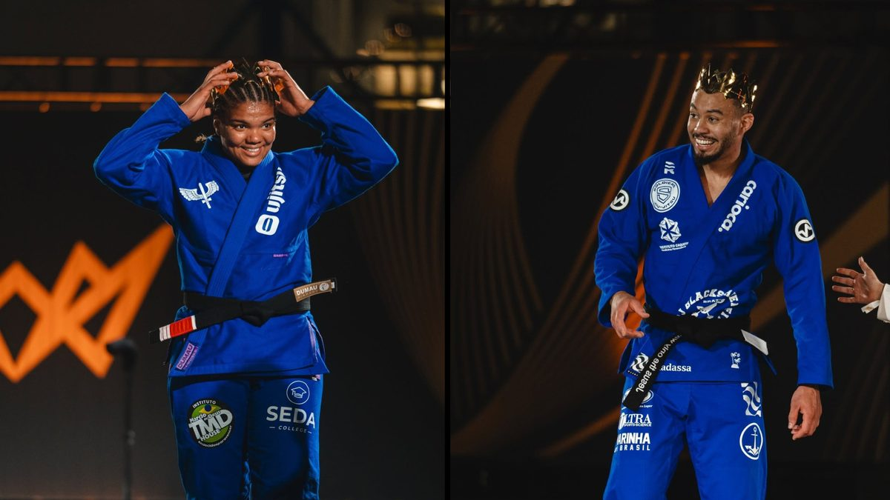
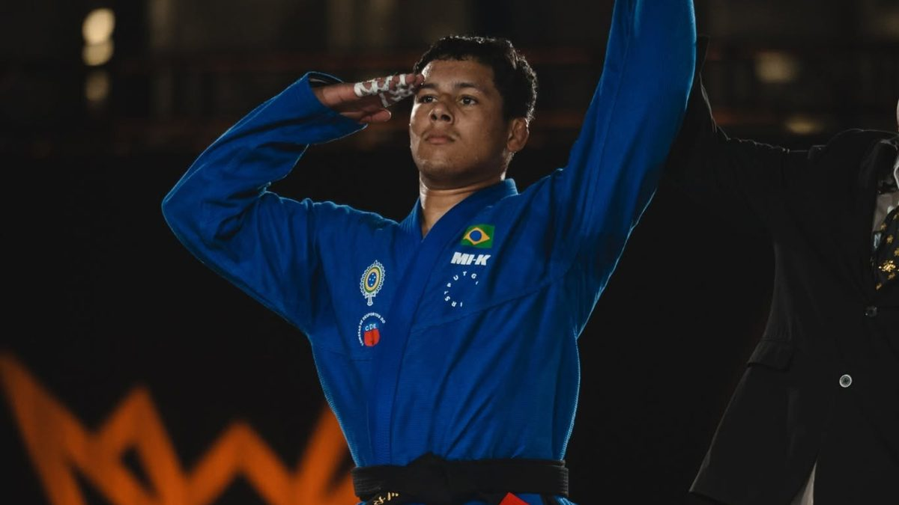
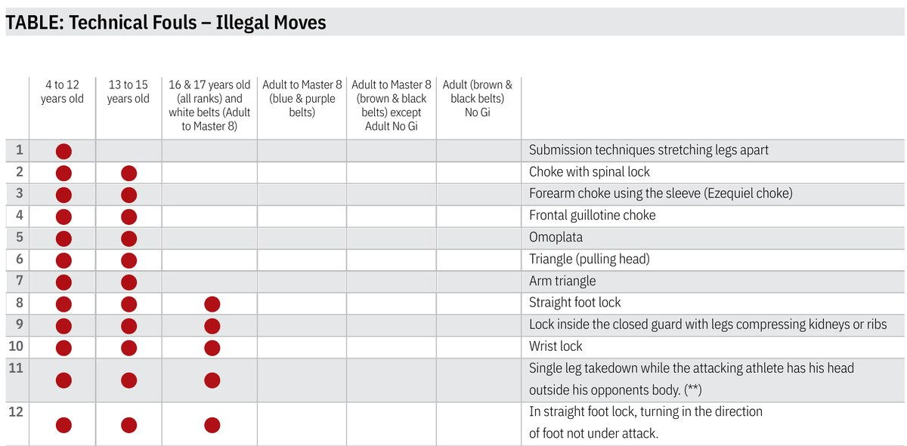
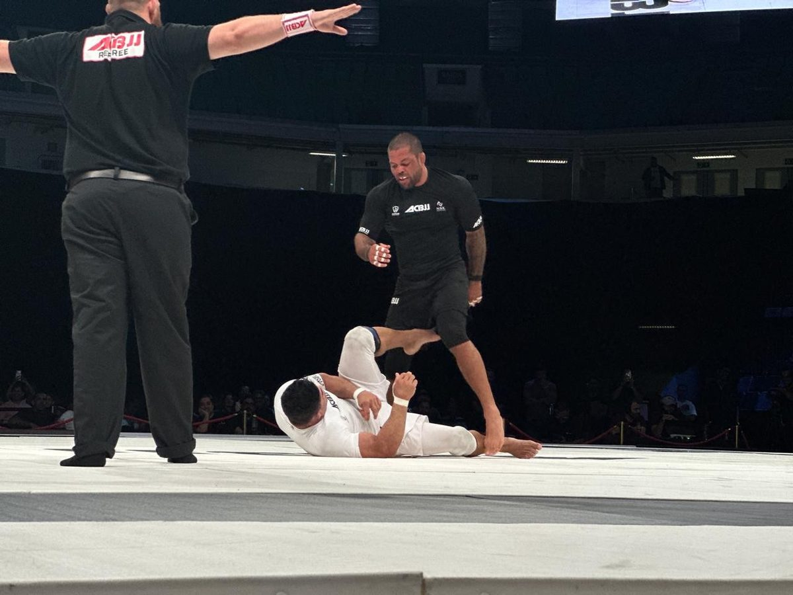
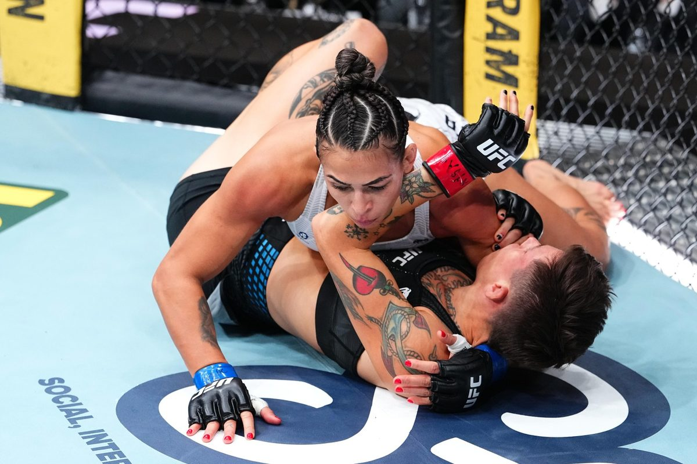

Fala, galera! Você já parou pra pensar que a regra do campeonato é tipo o limite de velocidade da estrada? Quase ninguém lê o código de trânsito inteiro, mas todo mundo sente no bolso quando a placa muda. Nesta semana a placa mudou: a IBJJF publicou as regras de 2027, e tem coisa ali que mexe direto com a vida de quem está começando.
Mas não foi só isso. Teve campeão voltando a um grande evento de kimono depois de muito tempo longe e ganhando como se nunca tivesse saído, teve revanche de 15 anos no Rio, teve jiu-jitsu quebrando recorde no UFC e, infelizmente, teve um caso em Maceió que todo mundo que treina precisa conhecer.
Como sempre, o Estagiário aqui separou o que importa e comentou do ponto de vista de quem treina por hobby, tem trabalho, família e dois ou três treinos na semana quando dá. Bora lá!
1. The Crown: Mica Galvão volta e leva a coroa, e Bisnaga se despede no alto

O que rolou: no domingo, 8 de novembro, a IBJJF realizou a quarta edição do The Crown, o torneio só para convidados, no Walter Pyramid, em Long Beach, na Califórnia: seis categorias com oito faixas-pretas cada e 20 mil dólares para cada campeão. O destaque foi o Mica Galvão, de 23 anos, que voltou à elite do kimono depois de um período longe das grandes competições, focado na família e no nascimento do primeiro filho. Na estreia dele no evento, ganhou o peso médio e venceu a final por 4 a 2 contra o Andy Murasaki, que tinha sido campeão da categoria em 2024 e 2025. Segundo o BJJDoc, o gerente-geral do FloGrappling, Ben Kovacs, contou que o Mica treinou só alguns dias por semana no último mês, sem preparação física nem dieta. Erich Munis (ultrapesado) e Gabi Pessanha (superpesado) venceram as três lutas por finalização e levaram o quarto título cada um, ou seja, venceram todas as edições do The Crown até agora. Sarah Galvão repetiu o título no peso leve, e Fellipe Andrew ganhou o pesado. No pena, o João "Bisnaga" Mendes foi campeão e, segundo a IBJJF, anunciou a aposentadoria deixando a faixa-preta no tatame da final. Ele disse que agora quer se dedicar à academia Alliance San Diego e ao programa infantil. O marroquino Seif-Eddine Houmine, bronze no ultrapesado, também encerrou a carreira de competidor. Fontes: IBJJF, BJJDoc e BJJ TV.
Calma, antes que alguém use isso de desculpa: o Mica é fora da curva, e "treinar pouco e ganhar" não vale pra quem tem dois anos de tatame. Mas tem uma lição escondida que serve pra todo mundo que já passou por uma fase de vida apertada, seja filho pequeno, mudança de emprego ou mês de hora extra. Base construída com anos de consistência não evapora em um mês de treino reduzido. O que some rápido é o gás, e o gás volta. Então, se a vida te deixou com um treino por semana, não pensa que "perdeu tudo" e larga de vez. Mantém o fio, mesmo que fino.
E repara no Bisnaga: campeão no último campeonato e saiu dizendo que o próximo passo é a academia e a criançada. Ninguém precisa esperar o corpo quebrar pra mudar de papel no jiu-jitsu. Na prática: se você está numa fase em que não dá pra treinar como antes, defina um mínimo que dá pra cumprir (um treino por semana, ou um drill de 20 minutos em casa) e cumpra sem drama. Mínimo cumprido vale mais do que plano perfeito abandonado.
2. Regras da IBJJF para 2027: chave de pé reta proibida para faixa-branca

O que rolou: a IBJJF publicou na noite de quinta-feira, 12 de novembro, as mudanças no livro de regras que entram em vigor em 1º de janeiro de 2027. A que mais deu o que falar: a chave de pé reta passa a ser golpe ilegal para faixas-brancas de todas as idades (do adulto ao novo Master 8) e para todos os juvenis de 16 e 17 anos, de qualquer faixa. Até agora, ela era proibida só nas categorias até 15 anos. Em compensação, faixas-azuis e roxas (do adulto ao Master 8) agora podem girar para o lado do pé que não está sendo atacado durante a chave de pé reta, algo que antes só marrom e preta podiam fazer. Puxar para a guarda fechada pulando num adversário em pé, incluindo triângulo e armlock voadores, vira falta grave com desclassificação imediata para faixas-brancas e categorias até 15 anos (antes, o árbitro só levantava os dois). Também mudou a regra da puxada dupla para a guarda: depois de 20 segundos sem ninguém ficar por cima ou pontuar, o árbitro para a luta e pune os dois, mesmo que alguém esteja com finalização encaixada. Surgiu uma punição para quem segura a lapela ou a faixa com a perna enrolada e não progride em 20 segundos, um gesto novo do árbitro para pedir calma e a categoria Master 8, para atletas de 66 anos ou mais, com lutas de quatro minutos. No sem kimono, a faixa-branca vai ter que usar camisa predominantemente branca. Jitsmagazine e Let's BJJ lembraram um detalhe importante: é regra de competição e não proíbe as academias de ensinarem a chave de pé reta no treino. Fontes: IBJJF: Rule Changes 2027, BJJDoc e Jitsmagazine.
Pensa comigo: a chave de pé reta é quase o primeiro ataque de perna que o faixa-branca aprende, e também um dos que mais machucam quando os dois lados não sabem o que estão fazendo. O cara que ataca puxa com força e torto, e o cara que defende não bate porque "não tá doendo ainda", até que estala. A IBJJF está basicamente dizendo que, no campeonato, o iniciante ainda não tem controle suficiente pra esse golpe. Dá pra discordar, e muita gente discordou, mas a lógica de segurança é clara.
Agora, o que isso muda pra quem não compete? Quase nada no rola de terça, porque a regra é de campeonato. Mas vale como alerta. Na prática: se você é faixa-branca, aprenda primeiro a DEFENDER a chave de pé (postura, esconder o pé, tirar a pressão do tornozelo) e a bater cedo. E se vai competir em 2027, confere a regra da sua faixa e da sua idade antes de montar o jogo em cima de um golpe que pode virar desclassificação. E pra quem passou dos 60: tem Master 8 chegando, sinal de que o tatame não tem data de validade.
3. ACBJJ 23: André Galvão vence Toquinho de novo, 15 anos depois

O que rolou: na sexta-feira, 13 de novembro, o ACBJJ 23 foi disputado na Arena Carioca 1, no Parque Olímpico do Rio de Janeiro, com 20 lutas e muitos duelos entre brasileiros e russos. Na luta principal, André Galvão venceu Rousimar "Toquinho" Palhares numa revanche da final do ADCC de 2011, que o Galvão também tinha vencido. Dessa vez, foi no formato "battle" do evento, que permite golpes abaixo da cabeça. Segundo o ge, o Galvão derrubou o ex-UFC várias vezes, dominou no chão com muita pressão e venceu por decisão dos juízes. O Sherdog descreveu a sequência clássica: queda, raspagem, passagem, montada e costas, com o Toquinho ainda tentando uma chave de pé no meio do caminho. Na luta coprincipal, Rodolfo Vieira finalizou André "Sergipano" Muniz com um katagatame (o triângulo de braço) depois de derrubar e montar. Antônio "Cara de Sapato" ganhou o cinturão All-Stars sem kimono por pontos contra o russo Ivan Shtyrkov, e, segundo o Sherdog, os brasileiros venceram o confronto contra os russos por 6 a 5. Fontes: ge, Sherdog e Fabric Jiu-Jitsu.
Quinze anos entre uma luta e outra, e o roteiro da vitória foi o mais básico possível: derrubar, passar, montar, pegar as costas. Não teve golpe secreto. O Toquinho era o favorito pra muita gente por causa da experiência no MMA, e mesmo assim o fundamento bem feito, com pressão e paciência, decidiu. Vale também pro Rodolfo: queda, montada e um katagatame, que é golpe de aula de faixa-branca.
Claro, a parte de joelhada no peito e soco no corpo fica pra eles. Ninguém aqui precisa disso na terça à noite. A lição que a gente leva é outra. Na prática: no próximo rola, tenta jogar a "escadinha" inteira sem pular degrau: chegar na posição, estabilizar, só aí avançar pra próxima. Muito iniciante passa a guarda e já sai caçando finalização com o quadril solto. Estabiliza três segundos antes de subir de posição. Parece pouco, mas é o que separa "quase passei" de "passei e fiquei".
4. Bia Mesquita bate o recorde de Ronda Rousey no UFC

O que rolou: no sábado, 14 de novembro, no card preliminar do UFC 334, no Madison Square Garden, em Nova York, a brasileira Bia Mesquita, multicampeã mundial de jiu-jitsu, finalizou a americana Macy Chiasson com um mata-leão aos 3min23s do primeiro round, pelo peso-galo. A Chiasson tentou manter distância e trocar em pé, mas a Bia chegou no clinch, pegou as costas, levou pro chão e trabalhou com calma, misturando ground and pound e controle até o pescoço aparecer. Foi a quarta vitória dela em quatro lutas no UFC, todas por finalização, e o cartel profissional foi para 9 a 0. Com isso, ela passou a ter o maior número de vitórias por finalização na história do peso-galo feminino do UFC, quebrando o empate com Ronda Rousey, que tinha três. Na coletiva, segundo o BJJDoc, a Bia, de 35 anos, disse que a meta é disputar o cinturão até o fim de 2027, porque sabe que não vai ter no MMA os 20 anos de carreira que teve no jiu-jitsu. Na mesma noite, a campeã da categoria, Kayla Harrison, finalizou Amanda Nunes com um mata-leão no quarto round e manteve o cinturão. Fontes: MMA Fighting, BJJDoc, MMA Junkie e ESPN.
Cara, que fase do jiu-jitsu feminino. A Bia chegou no UFC com um currículo enorme no kimono e está mostrando, luta após luta, que o jiu-jitsu bem feito continua sendo a arma mais confiável do octógono. E repara no "como": ela não saiu desesperada atrás da finalização. Pegou as costas, controlou, escolheu o momento. A adversária se defendeu do soco e deixou o pescoço. Isso é leitura de jogo, não força.
O pedaço que mais conversa com quem treina por hobby é a fala sobre o tempo. Ela tem 35 anos, sabe disso e montou um plano com prazo. Muita gente na faixa dos 30, 40 anos fica naquela de "um dia eu foco", "um dia eu volto a competir", "um dia eu acerto a dieta". Na prática: escolha UM objetivo de jiu-jitsu com data. Pode ser "até março eu quero sair da montada do fulano" ou "em junho eu vou fazer meu primeiro campeonato de master". Objetivo sem data é só desejo.
5. Caso em Maceió: o tapinha é sagrado
O que rolou: a Polícia Civil de Alagoas abriu inquérito depois que um vídeo de um treino de jiu-jitsu numa academia no bairro do Barro Duro, em Maceió, mostrou um adolescente batendo várias vezes pra sinalizar a desistência enquanto o adversário, apontado como o instrutor que conduzia o treino, mantinha o estrangulamento, até o garoto perder a consciência. A família registrou boletim de ocorrência. A delegada Thalita Aquino disse que a linha inicial é de lesão corporal, que o exame de corpo de delito foi pedido ao IML e que a academia também será investigada: qual era o vínculo do instrutor e se houve omissão na supervisão. O dono da academia pediu desculpas à família e reconheceu que errou ao deixar um instrutor conduzir o treino sem a presença dele. O presidente da federação de jiu-jitsu de Alagoas condenou o caso, disse que se tratava de um projeto sem a documentação adequada e lembrou que ter faixa-preta não qualifica ninguém automaticamente a dar aula. Até a publicação deste resumo, não havia conclusão da investigação. Fontes: TNH1, Jornal de Alagoas e BJJDoc.
Primeiro: força pro garoto e pra família. Quem vai dizer o que aconteceu, juridicamente, é a investigação. Mas o vídeo toca no acordo mais básico do jiu-jitsu, aquele que vem antes de qualquer técnica: bateu, soltou. Na hora. Sem "só mais um pouquinho", sem "ele bateu fraco", sem "ele tá exagerando". É esse acordo que deixa a gente estrangular os amigos três vezes por semana e voltar pra casa inteiro. Quando ele quebra, o tatame vira outra coisa. E quando a pessoa do outro lado é um adolescente, e quem não soltou é quem deveria cuidar do treino, o peso é muito maior.
Pra quem treina, a lição é dupla. Na prática: primeiro, solte no primeiro sinal, seja tapa na mão, no corpo, no chão ou só a voz. Se ficou na dúvida, solte. Segundo, se você tem filho no jiu-jitsu ou está escolhendo academia, pergunte quem dá a aula, com que credencial e quem supervisiona quando o professor não está. Academia séria não se ofende com essa pergunta. E se você viu alguém ignorando o tapinha no seu treino, fale com o professor. Isso não é dedurar ninguém, é proteger todo mundo.
De olho na agenda
- 21 de novembro: Polaris 40, em Southampton (Inglaterra), com a revanche Garry Tonon x Sam McNally pelo cinturão peso-leve. Fonte: EuroBJJ.
- 10 a 12 de dezembro: Mundial sem kimono da IBJJF, no Las Vegas Convention Center. Fonte: IBJJF.
- 2027: segundo o BJJDoc, a Claudia Gadelha, que comanda o UFC BJJ, disse que o evento deve ter lutas de kimono a partir de 2027, como atrações especiais no meio do card. Fonte: BJJDoc.
Resumo da ópera
- O Mica treinou pouco e ganhou, mas é base de anos. Na fase apertada, mantém um mínimo e não larga.
- Chave de pé reta sai do campeonato da faixa-branca em 2027. Aprenda a defender e a bater cedo.
- Galvão e Rodolfo venceram com queda, passagem e montada. Estabilize antes de subir de posição.
- A Bia tem 35 anos e um plano com data. Objetivo sem data é só desejo.
- Bateu, soltou. Na hora. Esse é o acordo que deixa todo mundo voltar pro treino na semana seguinte.
Se tiver aquele colega de treino que demora pra soltar o golpe "porque o outro bateu fraco", manda esse texto pra ele.
Quer receber o resumo toda semana no seu e-mail? É só entrar na newsletter: bjjalemdatecnica.com/newsletter.
Consistência bate talento quando o talento não é consistente.
Nos vemos no tatame. Oss!
Receba o resumo da semana no seu e-mail
Quer receber conteúdo como esse direto no seu e-mail? Entra na newsletter. É pra quem treina de verdade, tem trabalho, família e quer evoluir no tatame sem enrolação. É de graça.